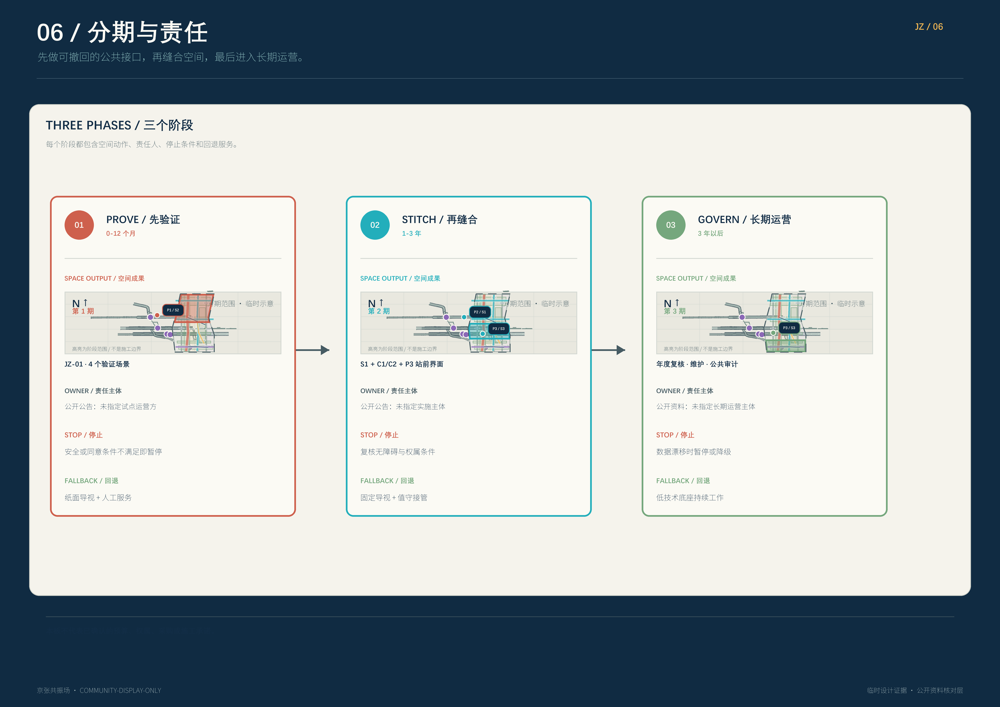

众智园
受控测试、标准共创、安全展示
- 测试花园 · 人工值守台
- 人工回退始终可见
把百年京张、产业创新与日常生活，组织成一套可读、可测试、可回退的 AI 公共接口网络。
总览地图 · 三层范围 · 重点区域 · 用地分区 · 交通慢行 · 蓝绿公共空间 · 建筑 · 更新项目 · AI 场景 · 核心指标 · 任务覆盖 · 自检状态 · 来源 · 假设
这组索引先告诉读者去哪找信息，六张图再承载具体证据。P1/P2/P3 把公开 POI QA 与 S1/S2/S3 三站角色连接起来；带版权标注的 Esri 影像、OSM 命名道路和公园/学校让真实城市可辨认；灰色边界是临时设计范围。
先在公开影像上定位 P1/P2/P3，再读 S1/S2/S3 三站、一脊、两缝与 P3 站前的概念关系。

先在公开影像上定位 P1/P2/P3，再读 S1/S2/S3 三站、一脊、两缝与 P3 站前的概念关系。
几何、指标和 QA 只代表本提交包的设计证据；正式边界、权属、控规、工程和文保资料到位后必须整包重算。
这是一张基于提交包几何的概念策略图，不是法定分区图；建筑、节点和慢行线在同一张图上对照。

这是一张基于提交包几何的概念策略图，不是法定分区图；建筑、节点和慢行线在同一张图上对照。
几何、指标和 QA 只代表本提交包的设计证据；正式边界、权属、控规、工程和文保资料到位后必须整包重算。
每个重点区都提供局部总平、街道/首层剖面与节点人行体验。

每个重点区都提供局部总平、街道/首层剖面与节点人行体验。
几何、指标和 QA 只代表本提交包的设计证据；正式边界、权属、控规、工程和文保资料到位后必须整包重算。
图例同时区分 OSM 公开道路背景、红色慢行脊、两条青色缝合、场景翼接口和 P3 站前关系；设计线不是道路红线。

图例同时区分 OSM 公开道路背景、红色慢行脊、两条青色缝合、场景翼接口和 P3 站前关系；设计线不是道路红线。
几何、指标和 QA 只代表本提交包的设计证据；正式边界、权属、控规、工程和文保资料到位后必须整包重算。
每个数字紧邻来源、公式和状态；UNKNOWN 表示已检索的公开来源尚未发布该控制层。

每个数字紧邻来源、公式和状态；UNKNOWN 表示已检索的公开来源尚未发布该控制层。
几何、指标和 QA 只代表本提交包的设计证据；正式边界、权属、控规、工程和文保资料到位后必须整包重算。
把空间成果与时间、责任主体、停止条件和回退服务绑定。

把空间成果与时间、责任主体、停止条件和回退服务绑定。
几何、指标和 QA 只代表本提交包的设计证据；正式边界、权属、控规、工程和文保资料到位后必须整包重算。
三个重点区不是标签：每个重点区都被写成一个带剖面、节点和人工回退的公共首层契约。
受控测试、标准共创、安全展示
开放学习、人才生活、公共解释
站城服务、多语导览、连续过街
已知值来自本包复算；未知值不以假精确填充。
本包在结构上是正式提交包，可进入评审；但不代表政府批准、法定规划、工程承诺或商业授权。